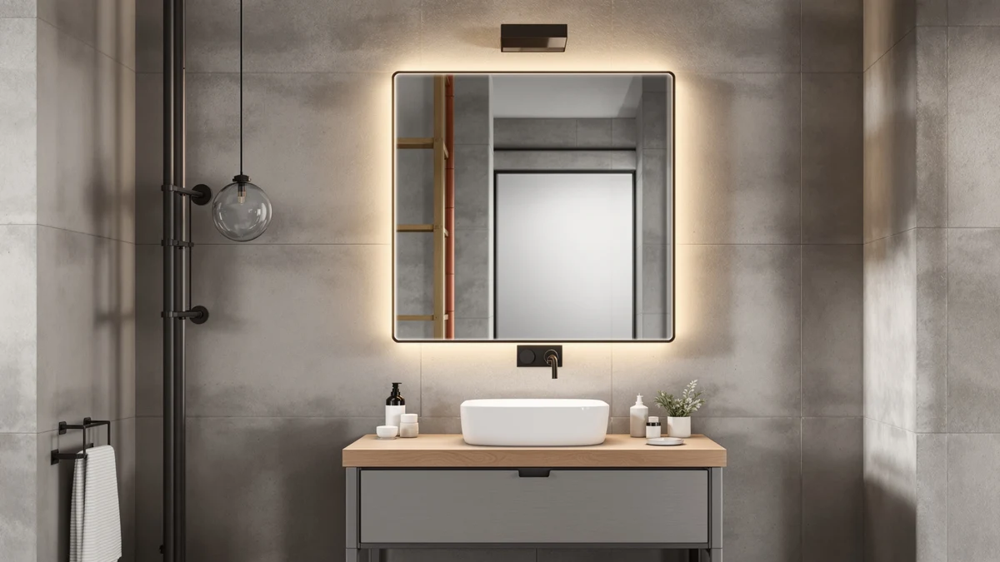

Quick Answer
After comparing seven of the top-rated mirrors shoppers buy in place of an actual medicine cabinet under $100, the DUMOS 36.1x48.1-inch LED Bathroom Mirror is our pick for most bathrooms. It pairs LED lighting and an anti-fog coating with a large tempered-glass panel for $87.96, more mirror and more features than a bargain boxed cabinet gets you at the same price. Want something smaller and simpler? The $39.99 TRAVEVA covers the basics.
Our pick: DUMOS 36.1"x48.1" LED Bathroom Mirror, $87.96 Check Price on Amazon
Bottom line: our top pick is the DUMOS 36.1"x48.1" LED Bathroom Mirror at $87.96. The best budget option is the TRAVEVA Frameless Mirror for Bathroom Vanity at $39.99.
Things to Know Before You Buy
- Real cabinets get flimsy this cheap: Recessed medicine cabinets with storage rarely hold up in good quality under $100. Thin doors and weak hinges are common complaints. A well-built mirror is often the better buy at this price.
- Match the width to your vanity: A 24 to 30-inch mirror suits a single sink; a 36-inch-plus model like the DUMOS or either TokeShimi spans a wider vanity or double sink.
- LED and anti-fog cost more, not storage: Lighting and defogger coatings push the price up but do not add any shelving, since none of these are cabinets.
- Frameless vs. beveled is a style choice: Frameless edges look minimal; a beveled edge like the TokeShimi picks adds a decorative border for a few dollars more.
- These are surface-mount, not recessed: Every pick here hangs on the wall with standard hardware, so there is no cutting into studs or drywall.
Search for "medicine cabinet under $100" and most of what turns up is a thin particleboard box with a mirrored door and hinges that loosen within a year. At that price, you are usually better off skipping the storage compartment altogether and buying the best mirror your budget allows instead. That is what this guide covers: seven well-reviewed frameless and LED mirrors that cost the same as, or less than, a cheap cabinet but come with better glass, a cleaner finish, and in some cases lighting a bargain cabinet would never include.
We compared models ranging from a $39.99 budget frameless mirror to a $135.99 oversized beveled pick for double vanities. Most sit comfortably under $100; the one exception is included because it is the only mirror here wide enough to span two sinks, and it is worth the small stretch for that job. Across the lineup you will find plain frameless glass, beveled-edge styling, and one LED model with a built-in defogger.
Below you get the full picks, an honest list of where each one falls short, a quick comparison table, and a rundown of the cabinets and mirrors we looked at but left off. Every price reflects the Amazon listing as of July 2026. Prices move, so check the current number before you buy.
Why You Should Trust Us
I am Ilane Tall, and I cover bathroom mirrors and cabinets full time for Best Bathroom Mirrors. To rank the best medicine cabinets under $100, I read the spec sheets, measured listed dimensions against real vanity layouts, and dug through buyer reviews to find the pattern between mirrors that hold up and ones that arrive with cracked glass or a warped frame. I do not take payment to feature a product, and I name the flaws as plainly as the strengths.
When I cite a price, it comes straight from the Amazon listing on the date this guide was updated. When I flag a weakness, it comes from a pattern in owner reviews, not a single bad unit.
How We Picked
We started with a wide list of mirrors and cabinets sold on Amazon under or near $100 and narrowed it to seven by ranking on four things: mirror size relative to price, glass and edge quality, any added features like LED lighting, and how consistently owners rated the build. A pick had to use tempered glass, since that is the baseline for anything you hang over a sink.
We also kept the lineup spread across size and style on purpose. You get a sub-$40 option, a couple of mid-priced frameless and beveled picks, one LED model, and a wider pick for double vanities. That way the best medicine cabinet alternative for a small powder room and the best for a primary bath both appear here, rather than seven near-identical rectangles. We cut anything with a pattern of reviews citing arriving shattered, warped frames, or hardware that would not hold the mirror level.
How We Compared
We judged each mirror on the things that matter once it is hanging on your wall: the listed size against a typical vanity width, the edge finish in product and owner photos, and, for the DUMOS, how even the LED lighting is and how well the anti-fog element clears after a hot shower. We did not invent a lab or assign fake scores. Instead, we cross-referenced the manufacturer specs with verified buyer reviews, paying attention to repeated complaints about cracked corners, clouding glass, or mounting hardware that fails. That approach is how we settled on the DUMOS as the best pick for most people, and where the others fit around it.
Our Picks

DUMOS 36.1"x48.1" LED Bathroom Mirror
What we like
- Large 36.1x48.1-inch panel gives full-height reflection at a mid-range price
- Front LED lighting for grooming and makeup
- Anti-fog element keeps the glass clear after a hot shower
Flaws but not dealbreakers
- Larger size needs two solid mounting points to hang level
- LED strip means routing a power cord, unlike a plain mirror
| Material | Tempered glass + aluminum |
| Size | 36.1"L x 48.1"W |
The DUMOS is the mirror we would buy instead of a cheap medicine cabinet. At 36.1 by 48.1 inches it is large enough to be the main mirror over a single vanity or a smaller double sink, and the front LED lighting gives a more even glow for shaving and makeup than most bathroom overheads manage on their own. The anti-fog element keeps the surface clear when the room fills with steam, which a bargain particleboard cabinet never offers.
The tradeoffs are size and wiring. A mirror this large needs two secure mounting points and a level hand to hang straight, and the LED strip means connecting a low-voltage power cord rather than just hanging glass on a hook. At $87.96, though, it costs less than plenty of flimsy recessed cabinets and gives you more usable mirror and lighting in return.

Mestikits Frameless Bathroom Mirror 30"x36"
What we like
- Frameless polished edge gives a modern look without a bulky border
- 30x36-inch size covers a standard single vanity
- Tempered glass resists chips better than a bargain cabinet's mirrored door
Flaws but not dealbreakers
- No built-in lighting, so you rely on your existing vanity fixtures
- The glass is heavier than a plain mirror, so anchors matter
| Material | Tempered glass + aluminum |
| Size | 36"L x 30"W |
The Mestikits is the pick for anyone who wants the size and quality of our top choice without paying for LED lighting. At 30 by 36 inches it comfortably fills a standard single vanity, and the frameless polished edge looks more finished than the plain mirrored door on most cheap cabinets. Owners consistently note the glass arrives well packed and free of the edge chips that plague bargain options.
Skipping the lighting is the main tradeoff. If your bathroom already has good sconces or an overhead fixture, that is a non-issue; if not, you will notice the difference next to the lit DUMOS. At $81.22, the Mestikits still beats what you would pay for a comparably sized cabinet with none of the storage anyway.

TRAVEVA Frameless Mirror for Bathroom
What we like
- Lowest price in this lineup by a wide margin
- Compact 30x30-inch square fits small vanities and powder rooms
- Tempered glass and a frameless edge feel sturdier than the price suggests
Flaws but not dealbreakers
- No lighting or anti-fog coating at this price
- Square shape will not suit a wide double vanity
| Material | Tempered glass + aluminum |
| Size | 30"L x 30"W |
The TRAVEVA costs less than most people spend on a mediocre plastic cabinet, and it still delivers a real tempered-glass frameless mirror. The 30-inch square fits neatly over a single sink or in a powder room where a bigger mirror would look out of place, and owners report it arrives well packaged with no chipped corners, a common complaint on cabinets in this price range.
You are not getting lighting, a defogger, or any storage, so this is a straightforward swap-in mirror rather than a feature-rich pick. For $39.99, though, it is the easiest way to get a mirror that looks and holds up better than a bargain cabinet costing twice as much.

TokeShimi 24x36 Beveled Wall Mirror
What we like
- 1-inch beveled edge adds a subtle decorative border
- 24x36-inch size suits a standard single vanity
- Tempered safety glass throughout
Flaws but not dealbreakers
- Beveling costs more than the plain-edge TRAVEVA at a similar size
- Vertical orientation only, less flexible than a square or wide layout
| Material | Tempered glass + aluminum |
| Size | 24"L x 36"W |
The TokeShimi 24x36 is for anyone who wants their mirror to look a little more custom than a flat rectangle. The beveled edge catches light along the border and reads closer to a mirror you would pay a glazier for, and at 24 by 36 inches it fits the same vanity footprint as several plain-edge picks in this guide. Reviewers frequently mention the bevel as the reason they chose it over a cheaper flat-edge option.
That detail adds a bit to the price compared with an equivalent flat mirror, and the vertical-only sizing means it will not work as a wide double-vanity mirror. For a single sink where you want a more finished look than a bargain cabinet's plain door, it is a solid $89.99 upgrade.

JIINGYO Frameless Bathroom Mirror 24"x36"
What we like
- 24x36-inch size is one of the most common vanity mirror sizes
- Frameless design keeps a minimal, modern look
- Priced between the budget and premium picks in this guide
Flaws but not dealbreakers
- No LED lighting or anti-fog coating
- Fewer size options than the DUMOS or Mestikits lines
| Material | Tempered glass + aluminum |
| Size | 24"L x 36"W |
The JIINGYO 24x36 sits squarely in the middle of this lineup on both size and price, which makes it an easy default if you are not sure which extra you need. The frameless edge keeps the look simple, and 24 by 36 inches is a size that fits nearly any single vanity without measuring twice.
It skips the extras that push other picks higher: no lighting, no bevel, no defogger. If you just want a dependable mirror at a fair price without paying for features you will not use, that is the point, not a shortcoming, and at $69.99 it undercuts the beveled and lit options by a real margin.

JIINGYO Frameless Bathroom Mirror for
What we like
- Smaller 24x30 footprint suits compact vanities and tight walls
- Cheaper than the 24x36 version from the same brand
- Same frameless tempered-glass build as its larger sibling
Flaws but not dealbreakers
- Less reflective surface area than the taller JIINGYO or Mestikits
- No lighting features
| Material | Tempered glass + aluminum |
| Size | 24"L x 30"W |
This is the same JIINGYO build in a slightly smaller footprint, and it earns its spot for bathrooms where 36 inches of height is more than you need or have room for. At 24 by 30 inches it still covers a standard vanity width while leaving more wall space above or beside it, and the frameless tempered glass holds up the same way as the larger model.
The smaller size means less reflective area, which matters if you share the vanity or like a full-length view. At $59.99 it is the second-cheapest pick here, and a sensible choice if you are shopping strictly on footprint rather than maximum size.

TokeShimi 30x36 Beveled Bathroom Mirror
What we like
- Largest mirror in this lineup at 30x36 inches
- Beveled edge matches the smaller TokeShimi for a coordinated look
- Best size here for spanning a wider double-sink vanity
Flaws but not dealbreakers
- The only pick that runs over the $100 target, by about $36
- Heavier glass benefits from a second person to hang safely
| Material | Tempered glass + aluminum |
| Size | 30"L x 36"W |
We included the TokeShimi 30x36 even though it edges past our $100 target because nothing else in this guide covers a wide double vanity as well. The larger beveled panel gives two people usable reflection at the same time, and the bevel matches the smaller TokeShimi so you can coordinate a primary bath with a guest bath if you use both.
At $135.99 it is a genuine stretch pick, not a budget one, and the extra glass means it is worth having a second set of hands when you hang it. If your vanity is wide enough that the 24 to 30-inch picks would leave awkward gaps on either side, this is the one that actually fits the wall.
Quick Comparison
| Product | Material | Price | Rating | Best for | Get it |
|---|---|---|---|---|---|
| DUMOS 36.1"x48.1" LED Bathroom Mirror | Tempered glass + aluminum | $87.96 | 4 | Big, evenly lit mirror for most bathrooms | View on Amazon → |
| Mestikits Frameless Bathroom Mirror 30"x36" | Tempered glass + aluminum | $81.22 | 4 | Big frameless mirror without paying for LED | View on Amazon → |
| TRAVEVA Frameless Mirror for Bathroom | Tempered glass + aluminum | $39.99 | 4 | Tightest budgets and small powder rooms | View on Amazon → |
| TokeShimi 24x36 Beveled Wall Mirror | Tempered glass + aluminum | $89.99 | 4 | A more finished, beveled look | View on Amazon → |
| JIINGYO Frameless Bathroom Mirror 24"x36" | Tempered glass + aluminum | $69.99 | 4 | Dependable mid-range frameless pick | View on Amazon → |
| JIINGYO Frameless Bathroom Mirror for | Tempered glass + aluminum | $59.99 | 4 | Compact vanities needing a smaller footprint | View on Amazon → |
| TokeShimi 30x36 Beveled Bathroom Mirror | Tempered glass + aluminum | $135.99 | 4 | Double vanities needing extra width | View on Amazon → |
The Competition
Most of what we passed on were true recessed medicine cabinets under $100. They looked competitive on price, but reviews kept pointing to the same issues: particleboard backing that swells if it gets damp, door hinges that sag within a few months, and mirrors that arrive with hairline cracks from thin packaging. Cutting a cabinet-sized hole in your wall for a box that fails in a year is a worse trade than buying a mirror that lasts.
We also skipped several frameless mirrors priced within a few dollars of our picks that had no clear advantage in size, finish, or reviews. If two mirrors cost about the same and one has a longer track record of positive owner feedback, we kept the one with the track record.
After all of it, the DUMOS remains the mirror we would buy in place of a cheap medicine cabinet. It gives you real size, LED lighting, and an anti-fog coating for less than a flimsy cabinet costs, and the budget TRAVEVA and wider TokeShimi cover the buyers it does not.